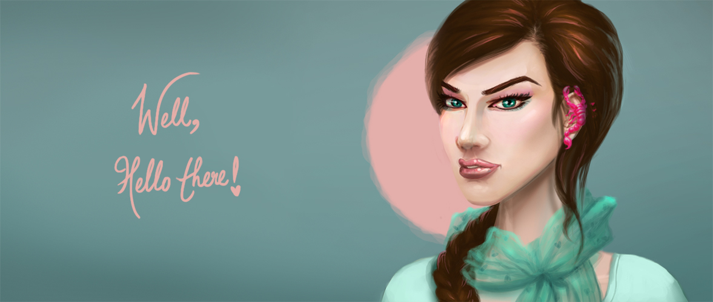
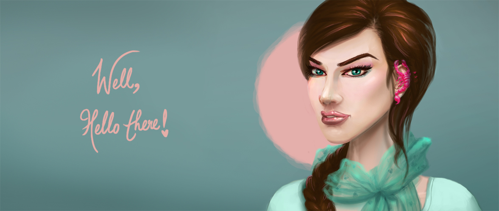

The Journey.
I was born in 1986 to my wonderful parents Qazi Imran and Mahrukh Qazi. The eldest of their 4 kids, I was never a very academic child and my hop-skip-jump of interests came to a conclusion when I mistakenly took up Fine Arts as a minor subject in high school. It wasn’t a successful venture in the beginning but with time and practice I started getting better till Art was the only subject holding up my grades and kept me going.
It was a stroke of luCK; actually Allah's guidance that I was able to get through the entrance test to a top design college in India. After finishing my college and getting a Bachelor's degree in Accessory Design from NIFT Bangalore, my life took a different route: Freelance illustration - using the old school hobby I had once pursued.
This was a tough and slow choice since I had neither experience nor education in this field and had no friends or acquaintances I could follow in this path. Slowly I built up my portfolio from the ground up with trusted and satisfied clients who graciously kept calling me back to work with them.
No one stands alone in their journey. My posse of people who have always provided ineffable support to me are my parents; my three siblings who are my central pillars; and my close friends : a former awesome-artist-now-chef and a brilliant coder/soul sister. But I would be remiss if I didn't mention my wonderful husband who is my backbone in life. He is my main source of inspiration-feed and pushes me to stay updated on new techniques, new tutorials, new ammo and mostly to stay punctual to timelines and to keep my work first. Now a mom of a wonderful 4yr old (M.A.) my art journey has a whole lot of love and wonderful moments to get inspired from.
Notable moments:
A big leap point was winning an illustration competition online which upgraded me to a Wacom Intuos Pro (fondly called as my arm extension).
A smashing highlight for me was getting a daily deviation on DeviantArt, a popular web portal for art and illustration.
With the help of my college friends and family I was also able to win the race to being featured on a popular Indian art/design magazine- Creative Gaga.
Passion:
I am fueled by my love for Disney, Harry Potter, Lord of the Rings Trilogy, Star Wars, Game of Thrones and all things fantasy and sci fi.
My biggest end goal is the satisfaction of my clients with my work and to you reader - 'I hope we work together someday!'
I am currently working as a freelance digital artist and am always interested in a challenge. Reach me on my social networks to connect with me!
Let's paint!